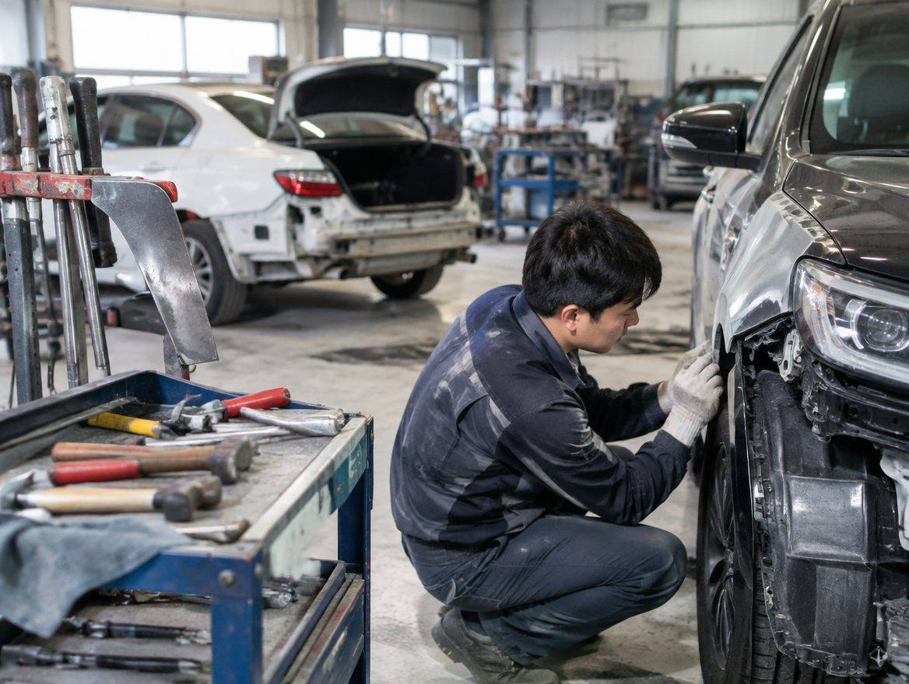
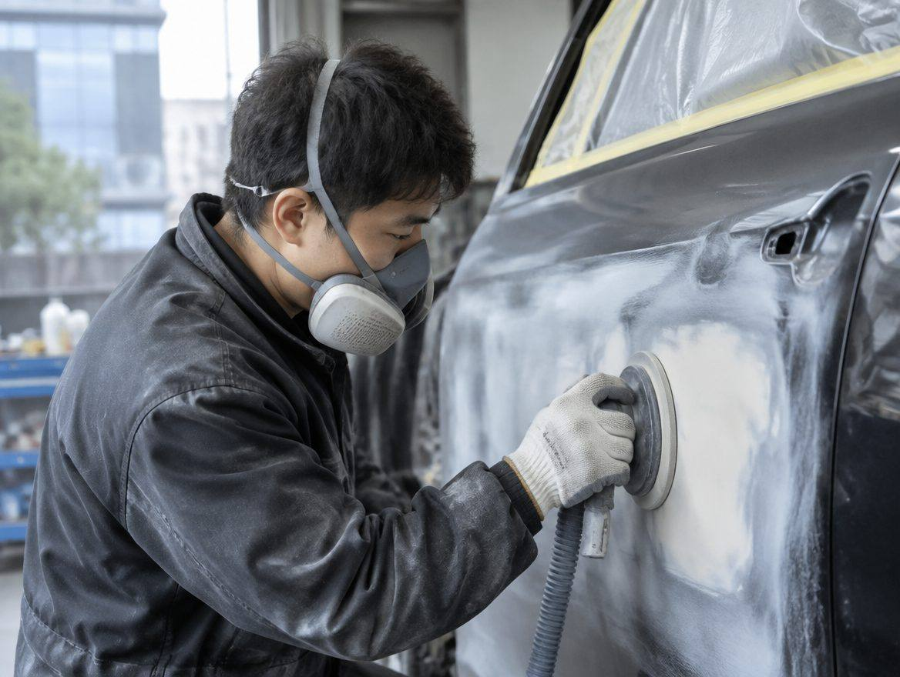
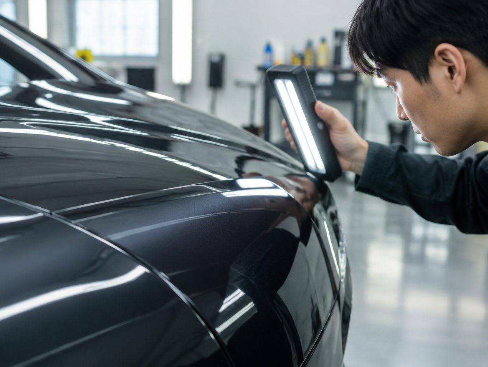

부천 부분 도색
조색 후 부분 도장
부천 부분 도색, 어떻게 진행되나요?
조색 후 부분 도장. 비용 : 현장 확인 후 안내드립니다. 작업 전에 금액을 먼저 확정합니다.
- 진행 순서
- 예약 → 점검 · 견적 → 작업 → 출고 · 설명
- 비용
- 현장 확인 후 안내드립니다
- 서비스 지역
- 부천 · 인천 부평 · 서울 구로
- 상담
- 010-0000-0000
이런 분께 맞습니다
이 서비스가 필요한 상황과 고객을 세 줄로 적습니다. 원고는 실제 현장 사례로 채웁니다견본 판금도색 B의 원칙
- 작업 전 견적 확인
- 조색 결과 확인
- 작업 사진 전달
진행 순서
- 예약
- 점검 · 견적
- 작업
- 출고 · 설명
작업 사진



부분 도색 자주 묻는 질문
작업 시간은요?
엔진오일은 30분 안팎, 코팅은 하루 이상 걸립니다.
부품을 가져가도 되나요?
지참 부품 장착이 가능합니다.
예약 없이 가도 되나요?
간단한 정비는 가능하지만 예약을 권합니다.
견적 문의
견본 판금도색 B · 010-0000-0000